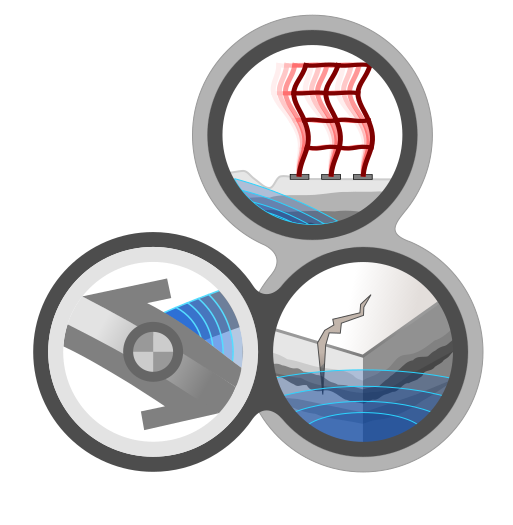
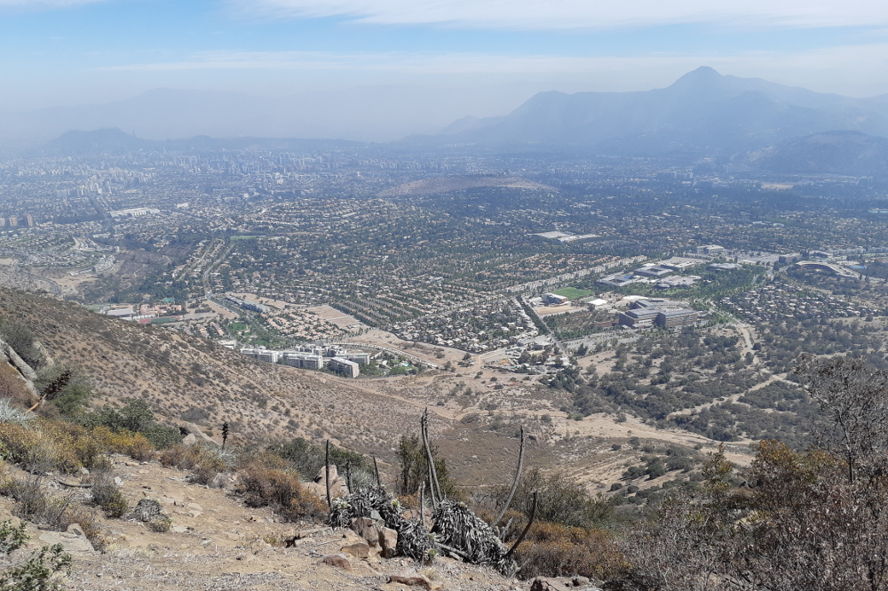
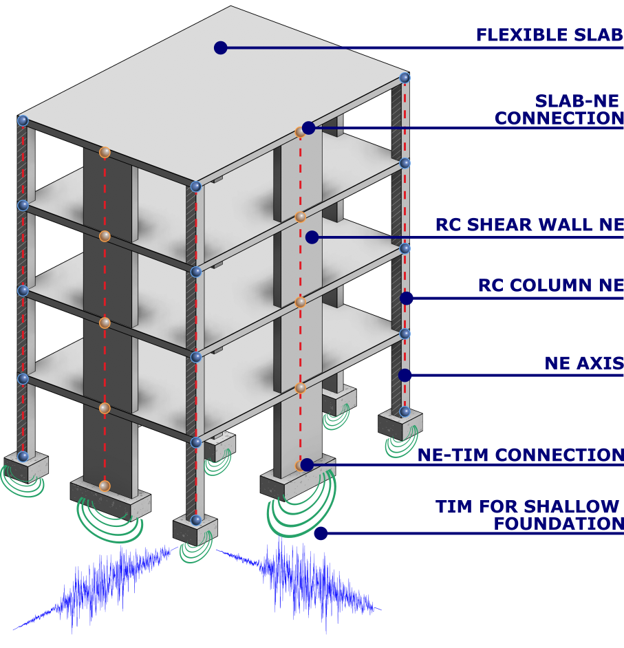
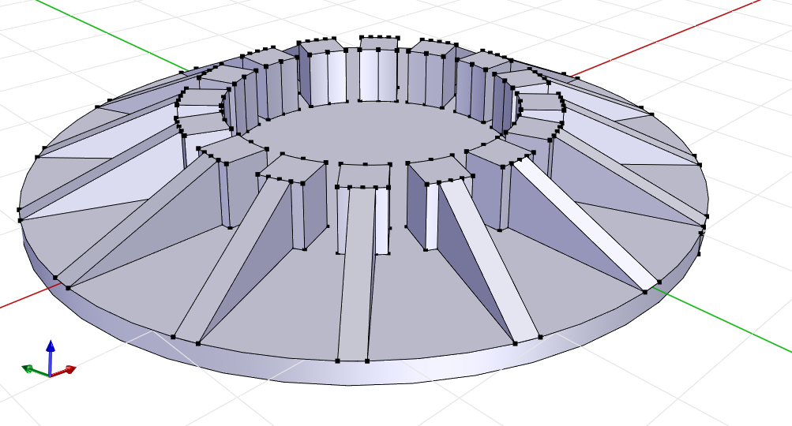

JOSÉ A. ABELL · UANDESSANTIAGO, CHILE · 2026
Join our work in earthquake engineering, computational mechanics, AI-driven simulation and early-age concrete behavior at Universidad de los Andes.
We connect physics-based simulations, experiments and open-source tools to questions engineers actually face. Choose a direction and help shape it.

Develop neural structural elements and efficient soil–foundation models trained on high-fidelity simulation. Explore and validate performance-based designs with OpenSees and HPC.

Combine thermo-mechanical simulation, laboratory experiments and on-site monitoring to predict and mitigate early-age cracking in massive concrete elements.
A doctoral research route and a postdoctoral route, each connected to the group's current projects.
Chilean and international applicants welcome. Enroll in the Doctorado en Ciencias de la Ingeniería at Universidad de los Andes.
An ANID doctoral scholarship award is required for this PhD opportunity. I can support you in developing the research proposal and application.
Chilean nationals only under the ANID provisions applicable to these opportunities.
Bring a research direction that connects with one of the projects. Contact me to discuss fit and the relevant funding arrangements.
Structural or geotechnical engineering, concrete thermo-mechanics, scientific programming, machine learning or instrumentation. No one needs every skill—bring curiosity and a willingness to learn across disciplines.
Email a short CV, the project and route you are interested in, and a few lines about the questions you want to tackle. PhD candidates: tell me where you are in the ANID scholarship process.
jaabell@uandes.cl · Read the full opportunity ↗